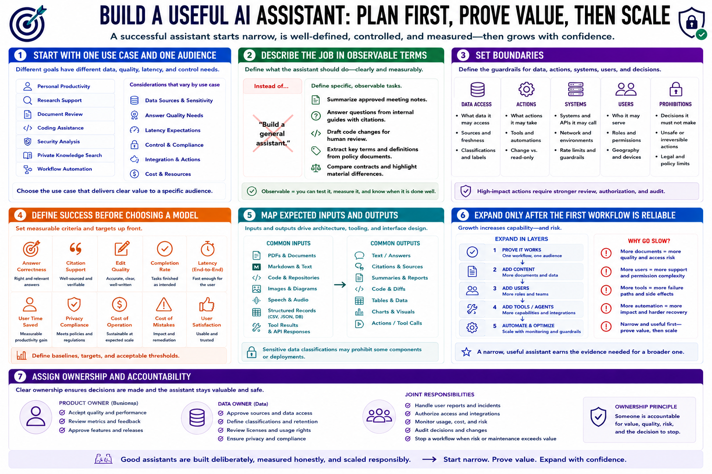

Defining the Assistant's Purpose
Connecting to LMS... Progress: in progress

Narration
Start with one use case and one audience. Personal productivity, research support, document review, coding, security analysis, private knowledge search, and workflow automation have different data, quality, latency, and control requirements.
Describe the job in observable terms. Instead of build a general assistant, define tasks such as summarize approved meeting notes, answer questions from internal guides with citations, or draft code changes for human review.
Set boundaries. Identify data the assistant may access, actions it may take, systems it may call, users it may serve, and decisions it must not make. High-impact actions need stronger review, authorization, and audit.
Define success before choosing a model. Measures may include answer correctness, citation support, edit quality, completion rate, latency, user time saved, privacy compliance, and the cost of mistakes.
Map expected inputs and outputs. PDFs, markdown, code, images, speech, structured records, and tool results each change infrastructure and interface needs. Sensitive data classifications may prohibit some components or deployments.
Expand only after the first workflow is reliable. Adding more documents, users, tools, agents, and automation multiplies failure paths. A narrow useful assistant earns the evidence needed for a broader one.
Assign a product owner and data owner. Someone must decide priorities, accept quality, approve sources, handle user reports, authorize access, and stop a workflow when risk or maintenance exceeds value.